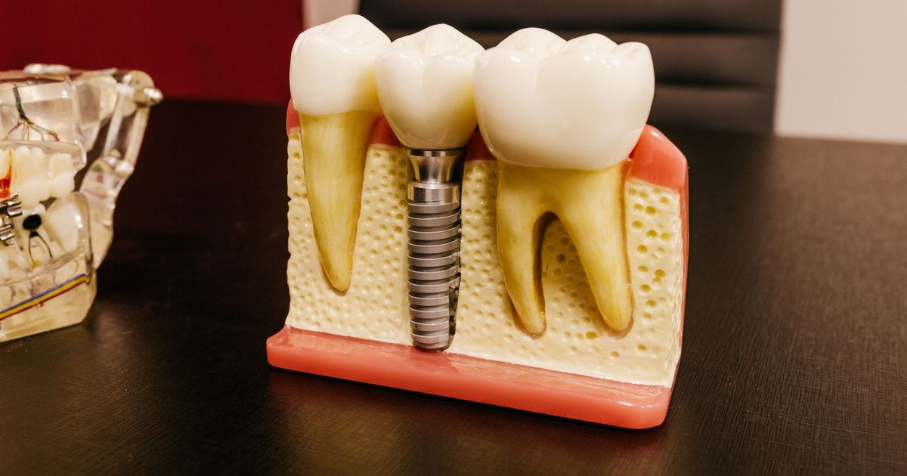

Information générale. Cet article s’appuie sur des recommandations publiées. Il ne constitue ni un diagnostic, ni une prescription, ni un conseil personnalisé : seul un examen par un chirurgien-dentiste ou un médecin permet de décider de la prise en charge qui vous convient. Ne commencez et n’arrêtez aucun traitement sur la seule foi de cet article.
L'essentiel
- La mucosite péri-implantaire est une inflammation de la gencive autour de l’implant, sans perte osseuse au-delà du remodelage osseux initial.
- La péri-implantite associe inflammation et perte osseuse progressive autour de l’implant.
- La prévention commence dès la planification de l’implant et se poursuit par un suivi régulier.
- Les antibiotiques ne sont pas recommandés en routine, ni pour la mucosite ni pour la péri-implantite.
Santé, mucosite, péri-implantite
Le consensus mondial de 2017 distingue trois situations autour d’un implant :
| Situation | Ce que l’on observe |
|---|---|
| Santé péri-implantaire | Ni rougeur, ni gonflement, ni saignement ou suppuration au sondage doux ; pas de perte osseuse au-delà du remodelage initial. |
| Mucosite péri-implantaire | Saignement et/ou suppuration au sondage doux, sans perte osseuse au-delà du remodelage initial. Rougeur et gonflement possibles. |
| Péri-implantite | Inflammation de la muqueuse autour de l’implant, avec perte osseuse de soutien progressive. Saignement et/ou suppuration au sondage, profondeur de sondage qui augmente, parfois récession de la gencive. |
Selon une revue citée par la recommandation européenne, la mucosite concernerait environ 4 patients porteurs d’implants sur 10 et la péri-implantite environ 2 sur 10 ; ces chiffres varient d’une étude à l’autre.
L’accumulation de plaque est le principal facteur de la mucosite. Pour la péri-implantite, le risque est accru en cas d’antécédent de parodontite sévère, de mauvais contrôle de la plaque et d’absence de maintenance régulière.
Pas de saignement, ni de suppuration, ni de perte osseuse au-delà du remodelage initial.
Gencive enflammée qui saigne ou suppure, sans perte osseuse au-delà du remodelage initial.
Inflammation avec perte osseuse progressive autour de l’implant.
Gencive Os Plaque
La prévention
Selon la recommandation européenne de 2023, la prévention commence avant la pose et se poursuit tout au long de la vie de l’implant :
- Avant la pose : évaluer le profil de risque, traiter la gingivite et la parodontite jusqu’à un état stable, et obtenir l’adhésion du patient à un programme de soins de soutien.
- À la conception : planifier la position de l’implant en trois dimensions (os suffisant autour de l’implant, bonne distance avec les dents voisines, bonne position en hauteur), et prévoir un accès suffisant pour l’hygiène et pour la sonde, avec un contour de prothèse favorable.
- Après la mise en fonction : sonder les tissus autour de l’implant à chaque examen et disposer d’une radiographie de référence, une fois le remodelage osseux terminé, pour pouvoir comparer.
Le traitement
Mucosite. L’hygiène personnelle efficace, associée au retrait professionnel de la plaque, est recommandée. Un contrôle est fait 2 à 3 mois plus tard : l’objectif est d’avoir au plus un point de saignement léger par implant et aucune suppuration, et le retrait professionnel est répété si l’objectif n’est pas atteint. Lorsque l’hygiène personnelle est impossible, des mesures portant sur la prothèse elle-même (la retirer ou la modifier, par exemple) sont recommandées. Les antibiotiques, locaux ou généraux, ne sont pas recommandés.
Péri-implantite. Le premier objectif est de conserver l’implant et sa prothèse lorsque c’est acceptable. Le traitement est séquentiel. Il commence par une étape non chirurgicale : apprentissage de l’hygiène, contrôle des facteurs de risque, modification ou retrait de la prothèse si elle empêche le brossage, et retrait professionnel de la plaque et du tartre sous la gencive autour de l’implant. Une réévaluation a lieu après 6 à 12 semaines. Si l’objectif n’est pas atteint, une chirurgie est recommandée, à condition que l’hygiène du patient soit suffisante et, de préférence, réalisée par un praticien formé. Les lasers, la thérapie photodynamique, l’aéropolissage, les gels et les antimicrobiens locaux ne sont pas suggérés en complément. Le traitement ne réussit pas dans tous les cas : dans les essais, la résolution complète variait de 0 à 65 % selon les groupes. Après le traitement, un suivi rapproché est suggéré.
Selon la HAS (2026), l’antibiotique n’est pas recommandé pour traiter une péri-implantite, sauf cas particuliers : patients à risque infectieux augmenté, signes d’extension de l’infection ou impossibilité de réaliser un geste local. Pour les personnes à haut risque d’endocardite, des règles particulières s’appliquent : la décision se prend avec le cardiologue et le chirurgien-dentiste. Dans les cas avancés, la décision de conserver ou de retirer l’implant appartient au praticien, après examen.
- Étape non chirurgicale
Apprentissage de l’hygiène, contrôle des facteurs de risque, modification ou retrait de la prothèse si elle empêche le brossage, retrait professionnel de la plaque et du tartre sous la gencive.
- Réévaluation à 6 à 12 semaines
On vérifie si l’objectif est atteint.
- Chirurgie si l’objectif n’est pas atteint
À condition que l’hygiène du patient soit suffisante et, de préférence, par un praticien formé.
- Suivi rapproché
Après le traitement.
Les signes à surveiller
Selon les définitions du consensus, une inflammation autour d’un implant se manifeste par un saignement et/ou une suppuration (du pus) au sondage, parfois une rougeur et un gonflement. Dans la péri-implantite, la profondeur de sondage augmente et la gencive peut se rétracter. La perte osseuse ne se voit pas à l’œil nu : elle se contrôle sur une radiographie, d’où l’intérêt de la radiographie de référence. Seul un examen permet de faire la différence : consultez dès l’apparition de signes inhabituels autour d’un implant.
Traitements : ce qui est recommandé et ce qui ne l’est pas
| Pratique | Position |
|---|---|
| Hygiène personnelle et retrait professionnel de la plaque (mucosite) | RecommandéContrôle 2 à 3 mois plus tard. |
| Antibiotique, local ou général (mucosite) | Non recommandé |
| Étape non chirurgicale (péri-implantite) | RecommandéRéévaluation à 6 à 12 semaines. |
| Chirurgie (péri-implantite, si l’objectif n’est pas atteint) | RecommandéHygiène suffisante ; praticien formé de préférence. |
| Antibiotique (péri-implantite) | Non recommandéSauf cas particuliers selon la HAS (2026). |
| Lasers, thérapie photodynamique, aéropolissage, gels, antimicrobiens locaux en complément | Non suggéré |
Les mots à connaître
- Mucosite péri-implantaire
- Inflammation de la gencive autour d’un implant, sans perte osseuse au-delà du remodelage initial.
- Péri-implantite
- Inflammation avec perte osseuse progressive autour d’un implant.
- Suppuration
- Écoulement de pus.
- Remodelage osseux initial
- Modification de l’os qui suit normalement la pose d’un implant.
- Radiographie de référence
- Radiographie réalisée une fois le remodelage osseux terminé, pour pouvoir comparer ensuite.
Questions à poser à votre praticien
Ces questions peuvent vous aider à préparer un rendez-vous. Les réponses dépendent de votre situation.
- Mes implants sont-ils sains ? Sondez-vous les tissus autour à chaque examen ?
- Dispose-t-on d’une radiographie de référence de mes implants ?
- Ma prothèse me permet-elle de brosser correctement autour de l’implant ?
- Si une inflammation apparaît, quel traitement envisagez-vous en premier ?
Questions fréquentes
Quelle différence entre mucosite et péri-implantite ?
Dans la mucosite, la gencive autour de l’implant est enflammée sans perte osseuse au-delà du remodelage initial. Dans la péri-implantite, l’inflammation s’accompagne d’une perte osseuse progressive.
Quels sont les signes d’une péri-implantite ?
Saignement et/ou suppuration au sondage, profondeur de sondage qui augmente, parfois récession de la gencive. Seul un examen permet de faire la différence avec une mucosite.
Est-ce fréquent ?
Selon une revue citée par la recommandation européenne, la mucosite concernerait environ 4 patients porteurs d’implants sur 10 et la péri-implantite environ 2 sur 10. Ces chiffres varient d’une étude à l’autre.
Comment prévenir la péri-implantite ?
La prévention commence avant la pose (traiter les gencives, évaluer le profil de risque), se poursuit à la conception de la prothèse (accès pour l’hygiène et pour la sonde) et après la mise en fonction (sondage à chaque examen, radiographie de référence).
Faut-il un antibiotique ?
Pas en routine. La recommandation européenne de 2023 ne le recommande pas pour la mucosite. Pour la péri-implantite, la HAS (2026) ne le recommande pas, sauf cas particuliers : patients à risque infectieux augmenté, signes d’extension de l’infection ou geste local impossible.
La péri-implantite se guérit-elle ?
Le traitement ne réussit pas dans tous les cas : dans les essais, la résolution complète variait de 0 à 65 % selon les groupes. Le premier objectif est de conserver l’implant et sa prothèse lorsque c’est acceptable.
Peut-on garder son implant ?
Dans les cas avancés, la décision de conserver ou de retirer l’implant appartient au praticien, après examen.
En résumé
Mucosite et péri-implantite sont des inflammations liées à la plaque. Elles se préviennent par une bonne planification, une hygiène rigoureuse et un suivi régulier, et se traitent d’abord par des moyens non chirurgicaux, sans antibiotique en routine.
Références
- Berglundh T, Armitage G, Araujo MG, et al. Peri-implant diseases and conditions: consensus report of workgroup 4 of the 2017 World Workshop on the Classification of Periodontal and Peri-Implant Diseases and Conditions. J Periodontol. 2018;89(Suppl 1):S313-S318. doi:10.1002/JPER.17-0739 https://doi.org/10.1002/JPER.17-0739
- Herrera D, Berglundh T, Schwarz F, Chapple I, Jepsen S, Sculean A, Kebschull M, Papapanou PN, Tonetti MS, Sanz M. Prevention and treatment of peri-implant diseases: the EFP S3 level clinical practice guideline. J Clin Periodontol. 2023;50(Suppl 26):4-76. doi:10.1111/jcpe.13823 https://doi.org/10.1111/jcpe.13823
- Fédération européenne de parodontologie (EFP). Guideline on treatment of peri-implant diseases (infographies issues de la recommandation S3 de 2023). https://www.efp.org/education/continuing-education/clinical-guidelines/guideline-on-treatment-of-peri-implant-diseases/
- Haute Autorité de santé (HAS). Prescription des antibiotiques en pratique bucco-dentaire. Recommandation de bonne pratique, validée le 16 juillet 2026, mise en ligne le 14 septembre 2026. https://www.has-sante.fr/jcms/p_3525810/fr/prescription-des-antibiotiques-en-pratique-bucco-dentaire
Pour une question sur votre situation personnelle, un examen est nécessaire : coordonnées et prise de rendez-vous sur la page Contact. N’envoyez pas d’informations de santé par le formulaire en ligne.